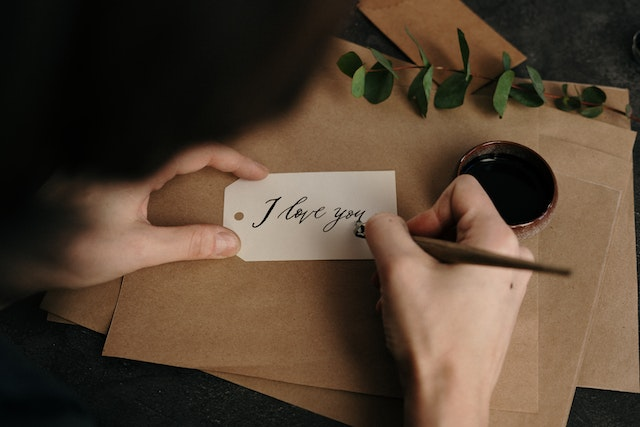

parte 1
Had to have high, high hopes for a living
Shooting for the stars when I couldn't make a killing
Didn't have a dime, but I always had a vision
Always had high, high hopes
parte 2
Had to have high, high hopes for a living
Shooting for the stars when I couldn't make a killing
Didn't have a dime, but I always had a vision
Always had high, high hopes

parte 3
Mama said: It's uphill for oddities
The stranger crusaders ain't ever wannabes
The weird and the novelties don't ever change
We wanted everything, wanted everything